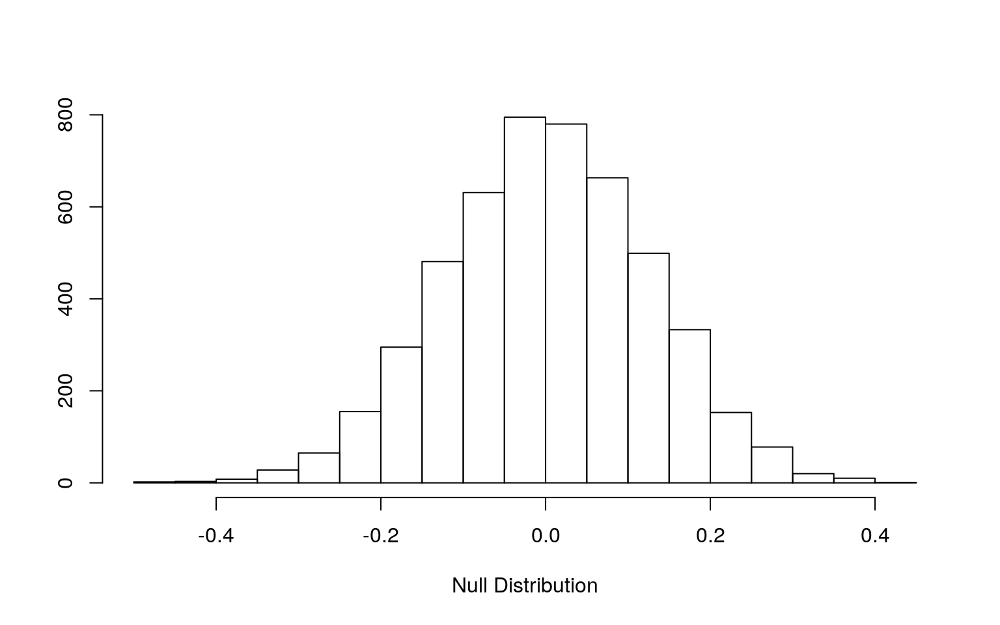
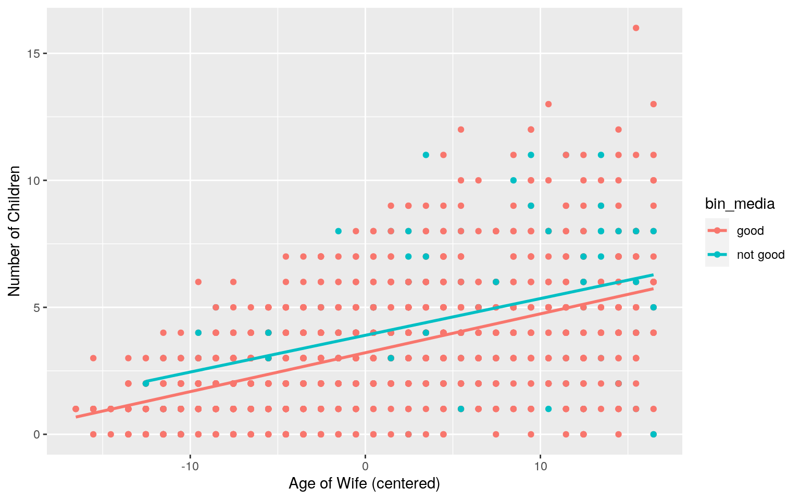
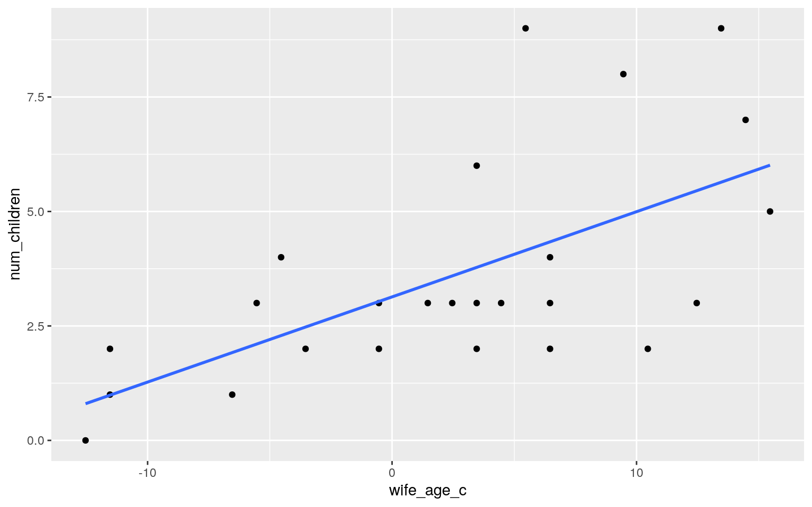
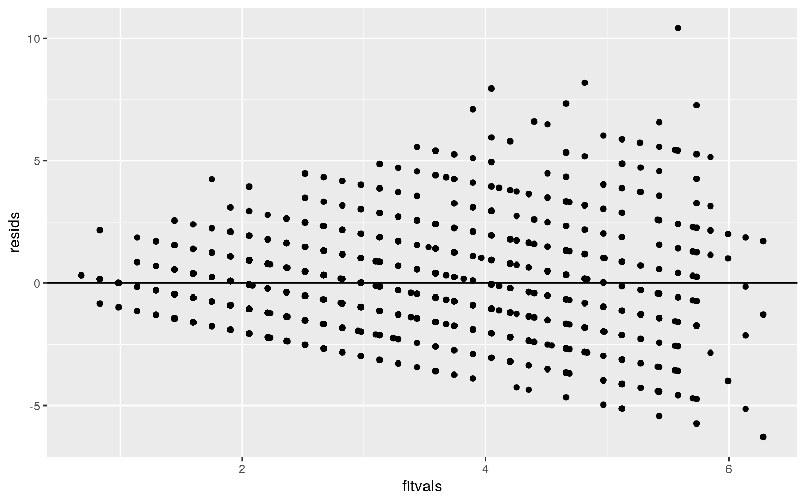
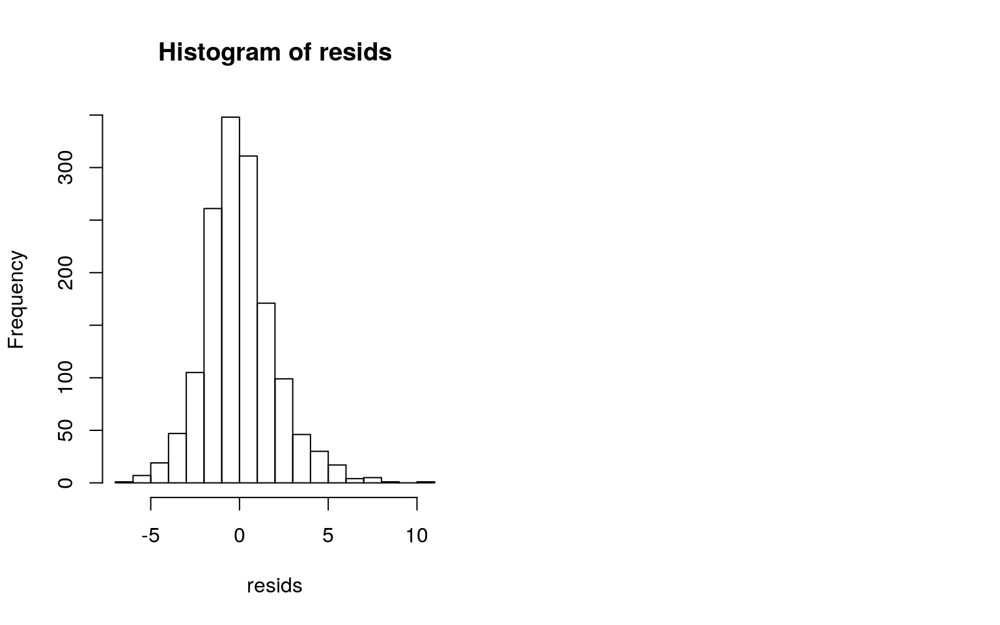
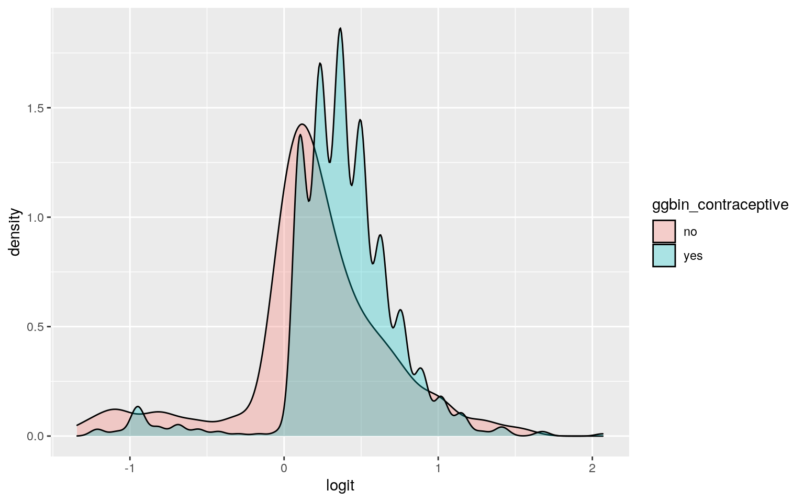
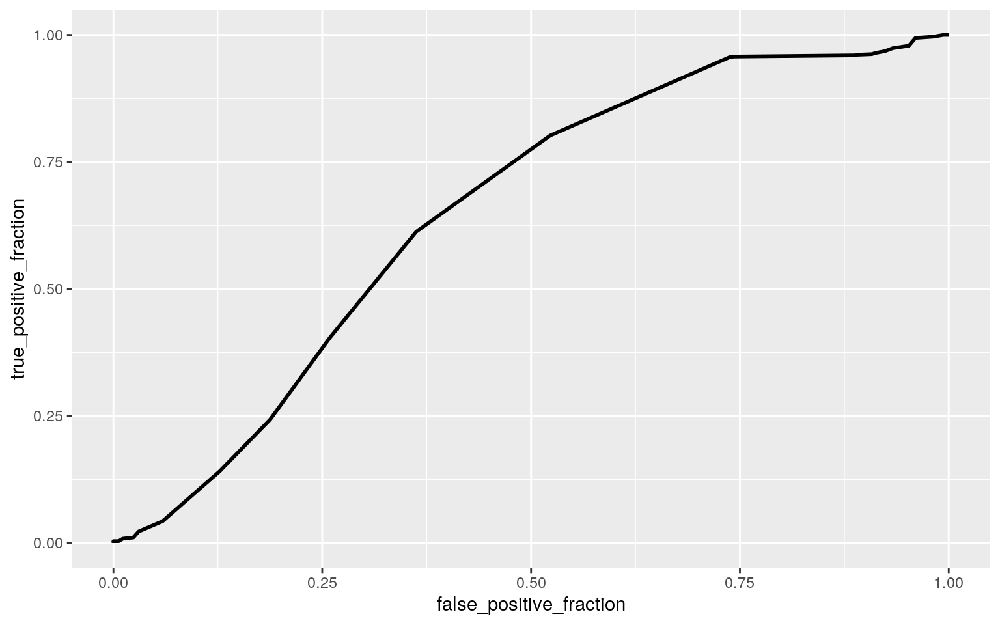
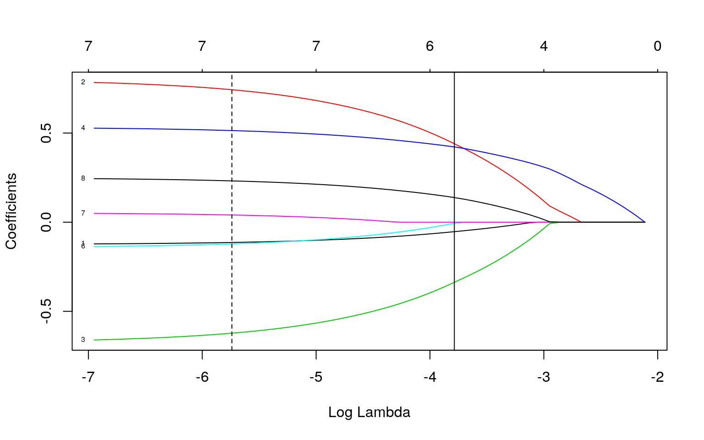

The dataset I chose to analyze is from the UCI Machine Learning Repository, and is called the Contraceptive Method Choice Data Set. It is a subset of the 1987 National Indonesia Contraceptive Prevalence Survey. The variables in this survey are the age, education, religion, and work status of the wife, the education of the husband, the number of children ever born, the standard of living, the level of media exposure the couple has, and the method of contraception. The original dataset includes three methods of contraception: no use, short-term use, and long-term use. For the purposes of this project, however, I will be combining short-term use and long-term use to create a binary variable. Age and number of children are numerical variables in this dataset; the other variables are categorical. There are 1473 observations in this dataset.
cmc <- read_csv("cmc.csv")
cmc <- cmc %>% mutate(contraceptive=NULL)
head(cmc)## # A tibble: 6 x 10
## ID wife_age wife_ed husband_ed num_children
wife_religion wife_work standard media
## <dbl> <dbl> <dbl> <dbl> <dbl> <dbl> <dbl> <dbl> <dbl>
## 1 1 24 2 3 3 1 1 3 0
## 2 2 45 1 3 10 1 1 4 0
## 3 3 43 2 3 7 1 1 4 0
## 4 4 42 3 2 9 1 1 3 0
## 5 5 36 3 3 8 1 1 2 0
## 6 6 19 4 4 0 1 1 3 0
## # … with 1 more variable: bin_contraceptive <dbl>Before testing this data using MANOVA, I first had to test the assumptions of multivariate normality and homogeneity of covariance matrices. I chose to test the effect of the number of children and the age of the wife on the method of contraception.
library(rstatix)
group <- cmc$bin_contraceptive
DVs <- cmc %>% select(wife_age,num_children)
#Test multivariate normality for each group (null: assumption met)
sapply(split(DVs,group), mshapiro_test)## 0 1
## statistic 0.950716 0.9084806
## p.value 1.214671e-13 4.252026e-22#If any p<.05, stop. If not, test homogeneity of covariance matrices
#Box's M test (null: assumption met)
box_m(DVs, group)## # A tibble: 1 x 4
## statistic p.value parameter method
## <dbl> <dbl> <dbl> <chr>
## 1 109. 1.72e-23 3 Box's M-test for Homogeneity of
Covariance Matrices#View covariance matrices for each group
lapply(split(DVs,group), cov)## $`0`
## wife_age num_children
## wife_age 83.24469 12.468796
## num_children 12.46880 7.051477
##
## $`1`
## wife_age num_children
## wife_age 55.155908 9.389073
## num_children 9.389073 4.321448I found that both of the assumptions of multivariate normality and homogeneity of covariance matrices were violated. This will serve as a limitation for my final results, but I will still conduct the MANOVA test.
man1<-manova(cbind(wife_age,num_children)~bin_contraceptive, data=cmc)
summary(man1)## Df Pillai approx F num Df den Df Pr(>F)
## bin_contraceptive 1 0.049362 38.165 2 1470 < 2.2e-16 ***
## Residuals 1471
## ---
## Signif. codes: 0 '***' 0.001 '**' 0.01 '*' 0.05 '.' 0.1
' ' 1The MANOVA test is significant! I will follow up with univariate ANOVAs for each variable.
summary.aov(man1)## Response wife_age :
## Df Sum Sq Mean Sq F value Pr(>F)
## bin_contraceptive 1 862 861.99 12.837 0.0003509 ***
## Residuals 1471 98774 67.15
## ---
## Signif. codes: 0 '***' 0.001 '**' 0.01 '*' 0.05 '.' 0.1
' ' 1
##
## Response num_children :
## Df Sum Sq Mean Sq F value Pr(>F)
## bin_contraceptive 1 117.1 117.063 21.335 4.193e-06 ***
## Residuals 1471 8071.3 5.487
## ---
## Signif. codes: 0 '***' 0.001 '**' 0.01 '*' 0.05 '.' 0.1
' ' 1Both are significant, meaning that for both the wife's age and the number of children, the method of contraception differs significantly within the group. Since the method of contraception is a binary variable, I do not need to do post-hoc testing on this data. I have done a total of three tests, meaning I must change the alpha to 0.0167. Even so, all of my test results are still significant.
I next conducted a randomization test on the mean difference between the number of children of women in each of the two contraceptive groups. The null hypothesis is that the mean difference in number of children does not differ significantly from the null distribution generated by the randomization test, and the alternative is that it does differ significantly.
cmc%>%group_by(bin_contraceptive)%>%summarize(means=mean(num_children))%>%summarize(`mean_diff`=diff(means))## # A tibble: 1 x 1
## mean_diff
## <dbl>
## 1 0.570rand_dist<-vector()
for(i in 1:5000){
new<-data.frame(num_children=sample(cmc$num_children),bin_contraceptive=cmc$bin_contraceptive)
rand_dist[i]<-mean(new[new$bin_contraceptive==1,]$num_children)-mean(new[new$bin_contraceptive==0,]$num_children)}
{hist(rand_dist,main="",ylab="", xlab="Null Distribution"); abline(v = c(-0.5699222, 0.5699222),col="red")}
mean(rand_dist>0.5699222 | rand_dist < -0.5699222)## [1] 0The p-value for this test is 0, meaning that the probability of obtaining a result as extreme as the observed difference of means from within the null distribution created through the randomization test is zero. The above plot of the null distribution illustrates this zero result; one of the boundaries, which signifies the test statistics, is not even visible since it is so far to the right. Therefore, I reject the null hypothesis and conclude that the mean difference in the number of children between the two contraceptive groups differs significantly. This means that women who use birth control have a significantly different number of children than those who do not.
I next did a linear regression to determine if the age of the wife and the family's media exposure impacted the number of children born. I started by creating a new character-based "media" variable so that it would work properly in ggplot, and I centered the ages of the wives. I then ran the regression.
cmc <- cmc %>%mutate(bin_media=ifelse(media==1,"not good","good"))
cmc$wife_age_c <- cmc$wife_age - mean(cmc$wife_age)
fit<-lm(num_children~media*wife_age_c, data= cmc)
summary(fit)##
## Call:
## lm(formula = num_children ~ media * wife_age_c, data =
cmc)
##
## Residuals:
## Min 1Q Median 3Q Max
## -6.2813 -1.2113 -0.1393 1.0230 10.4195
##
## Coefficients:
## Estimate Std. Error t value Pr(>|t|)
## (Intercept) 3.212631 0.053623 59.912 < 2e-16 ***
## media 0.686480 0.210022 3.269 0.00111 **
## wife_age_c 0.153147 0.006587 23.251 < 2e-16 ***
## media:wife_age_c -0.008438 0.023025 -0.366 0.71408
## ---
## Signif. codes: 0 '***' 0.001 '**' 0.01 '*' 0.05 '.' 0.1
' ' 1
##
## Residual standard error: 1.979 on 1469 degrees of
freedom
## Multiple R-squared: 0.2971, Adjusted R-squared: 0.2957
## F-statistic: 207 on 3 and 1469 DF, p-value: < 2.2e-16This revealed that controlling for age, media exposure has a positive effect on the number of children, increasing the number by 0.69 children when it is good. When controlling for media exposure, the age of the wife also has a positive effect, increasing the number of children by 0.15 per year of the wife's age. The interaction between these two variables has a negative effect. I have plotted these results below.
ggplot(cmc, aes(wife_age_c,num_children, color=bin_media))+geom_point()+geom_smooth(method="lm", se=F) +xlab("Age of Wife (centered)") + ylab("Number of Children") I then checked the assumptions of this regression.
lin_samp <- sample_n(cmc, 25)
ggplot(lin_samp, aes(wife_age_c, num_children)) + geom_point() + geom_smooth(method="lm", se=F)
resids<-fit$residuals
fitvals<-fit$fitted.values
data.frame(resids,fitvals)%>%ggplot(aes(fitvals,resids))+geom_point()+geom_hline(yintercept=0)
par(mfrow=c(1,2)); hist(resids) From these tests, it appears that homoskedasticity is violated, as the points fan out. The residuals are more or less normally distributed, and the data is linear.
Because the data is not homoskedastic, I recomputed the regression results using robust standard errors.
library(sandwich); library(lmtest)
coeftest(fit, vcov = vcovHC(fit))##
## t test of coefficients:
##
## Estimate Std. Error t value Pr(>|t|)
## (Intercept) 3.2126310 0.0537530 59.7665 < 2.2e-16 ***
## media 0.6864802 0.2062530 3.3283 0.0008953 ***
## wife_age_c 0.1531471 0.0074022 20.6893 < 2.2e-16 ***
## media:wife_age_c -0.0084376 0.0271379 -0.3109 0.7559085
## ---
## Signif. codes: 0 '***' 0.001 '**' 0.01 '*' 0.05 '.' 0.1
' ' 1This does not change any of the intercepts, but slightly changes the significance of each. In the initial regression, only media exposure and the wife's age were significant; the interaction between these variables was not. This is true of the recomputed regression results, but the specific p-values are different. Overall, the robust standard errors do not change the results. Overall, this model explains 0.2957 (29.57%) of the variation in the number of children a woman has.
I then reran the above regression using bootstrapped standard errors, which I found by resampling observations.
samp_distn<-replicate(5000, {
boot_dat <- sample_frac(cmc, replace=T) #take bootstrap sample of rows
fit <- lm(num_children~media*wife_age_c, data=boot_dat) #fit model on bootstrap sample
coef(fit) #save coefs
})
samp_distn %>% t %>% as.data.frame %>% summarize_all(sd)## (Intercept) media wife_age_c media:wife_age_c
## 1 0.05303641 0.2048016 0.007412836 0.02665803These standard errors differ only very slightly from the robust standard errors calculated above, but differ a bit more from the original standard errors. The standard error for media is slightly lower, while the standard errors for the wife's ages and the interaction term are slightly higher.
I chose to run a logistic regression to try to predict whether or not a woman uses contraception from the number of children she has and the media exposure she has.
fit2<-glm(bin_contraceptive~num_children+bin_media, family="binomial", data=cmc)
coeftest(fit2)##
## z test of coefficients:
##
## Estimate Std. Error z value Pr(>|z|)
## (Intercept) -0.028571 0.092100 -0.3102 0.7564
## num_children 0.131047 0.024415 5.3675 7.983e-08 ***
## bin_medianot good -1.314323 0.219223 -5.9954 2.030e-09
***
## ---
## Signif. codes: 0 '***' 0.001 '**' 0.01 '*' 0.05 '.' 0.1
' ' 1Controlling for media exposure, for every additional child born, odds of using contraception change by a factor of 1.14. Controlling for number of children, odds of using contraception for women who do not have good media exposure change by a factor of 0.26.
cmc$prob <- predict(fit2,type="response")
cmc$predicted <- ifelse(cmc$prob>.5,"1","0")
table(truth=cmc$bin_contraceptive, prediction=cmc$predicted)%>%addmargins## prediction
## truth 0 1 Sum
## 0 162 467 629
## 1 36 808 844
## Sum 198 1275 1473class_diag <- function(probs,truth){
#CONFUSION MATRIX: CALCULATE ACCURACY, TPR, TNR, PPV
tab<-table(factor(probs>.5,levels=c("FALSE","TRUE")),truth)
acc=sum(diag(tab))/sum(tab)
sens=tab[2,2]/colSums(tab)[2]
spec=tab[1,1]/colSums(tab)[1]
ppv=tab[2,2]/rowSums(tab)[2]
f1=2*(sens*ppv)/(sens+ppv)
if(is.numeric(truth)==FALSE & is.logical(truth)==FALSE) truth<-as.numeric(truth)-1
#CALCULATE EXACT AUC
ord<-order(probs, decreasing=TRUE)
probs <- probs[ord]; truth <- truth[ord]
TPR=cumsum(truth)/max(1,sum(truth))
FPR=cumsum(!truth)/max(1,sum(!truth))
dup<-c(probs[-1]>=probs[-length(probs)], FALSE)
TPR<-c(0,TPR[!dup],1); FPR<-c(0,FPR[!dup],1)
n <- length(TPR)
auc<- sum( ((TPR[-1]+TPR[-n])/2) * (FPR[-1]-FPR[-n]) )
data.frame(acc,sens,spec,ppv,f1,auc)
}
class_diag(cmc$prob, cmc$bin_contraceptive)## acc sens spec ppv f1 auc
## 1 0.65852 0.957346 0.2575517 0.6337255 0.7626239
0.6508262cmc <- cmc %>%mutate(ggbin_contraceptive=ifelse(bin_contraceptive==1,"yes","no"))
cmc$logit<-predict(fit2)
ggplot(cmc, aes(logit, fill=ggbin_contraceptive))+geom_density(alpha=.3)
library(plotROC)
ROCplot<-ggplot(cmc)+geom_roc(aes(d=bin_contraceptive,m=prob), n.cuts=0)
ROCplot
calc_auc(ROCplot)## PANEL group AUC
## 1 1 -1 0.6508262Both accuracy and precision are relatively low, which is not a good sign for this model. Sensitivity is very high and specificity is very low; this indicates that while most contraception users were correctly classified, few people who do not use contraception were correctly classified. The AUC is 0.65, which can be interpreted as poor performance. The plot of the log-odds shows that the two groups are largely overlapping, which is not good, and the ROC curve is strongly curved, leading to the poor AUC value.
Finally, I ran a logistic regression using every variable to predict whether or not a woman uses contraception.
fit3<-glm(bin_contraceptive~num_children+bin_media+wife_age_c+wife_ed+husband_ed+wife_religion+wife_work+standard, family="binomial", data=cmc)
coeftest(fit3)##
## z test of coefficients:
##
## Estimate Std. Error z value Pr(>|z|)
## (Intercept) -2.8713722 0.4057968 -7.0759 1.485e-12 ***
## num_children 0.3400411 0.0344102 9.8820 < 2.2e-16 ***
## bin_medianot good -0.4783739 0.2479760 -1.9291 0.0537168
.
## wife_age_c -0.0823135 0.0093823 -8.7732 < 2.2e-16 ***
## wife_ed 0.5251153 0.0769951 6.8201 9.097e-12 ***
## husband_ed 0.0012604 0.0918555 0.0137 0.9890518
## wife_religion -0.4005779 0.1709915 -2.3427 0.0191460 *
## wife_work 0.1231948 0.1330073 0.9262 0.3543285
## standard 0.2555349 0.0665152 3.8418 0.0001222 ***
## ---
## Signif. codes: 0 '***' 0.001 '**' 0.01 '*' 0.05 '.' 0.1
' ' 1cmc$prob2 <- predict(fit3,type="response")
class_diag(cmc$prob2, cmc$bin_contraceptive)## acc sens spec ppv f1 auc
## 1 0.6775289 0.813981 0.4944356 0.6835821 0.7431044
0.7142977In this case, the regression appears to have performed somewhat better than when I only predicted using two variables. The AUC is now 0.71, which is classified as fair. The accuracy are precision are still low, although slightly higher than before. The sensitivity has decreased and the specificity has increased, meaning that although the model still labels people who use contraception better than those who do not, the difference has decreased.
Next, I used cross-validation to test how the model fits to unknown data.
set.seed(456)
k=10
data<-cmc[sample(nrow(cmc)),] #randomly order rows
folds<-cut(seq(1:nrow(cmc)),breaks=k,labels=F) #create folds
diags<-NULL
for(i in 1:k){
## Create training and test sets
train<-data[folds!=i,]
test<-data[folds==i,]
truth<-test$bin_contraceptive ## Truth labels for fold i
## Train model on training set (all but fold i)
fit<-glm(bin_contraceptive~num_children+bin_media+wife_age_c+wife_ed+husband_ed+wife_religion+wife_work+standard,
family="binomial",data=train)
## Test model on test set (fold i)
probs<-predict(fit,newdata = test,type="response")
## Get diagnostics for fold i
diags<-rbind(diags,class_diag(probs,truth))
}
summarize_all(diags,mean)## acc sens spec ppv f1 auc
## 1 0.676857 0.8155582 0.4935735 0.6832054 0.7424879
0.7058379The AUC rounds 0.71, which is the same as it was with the in-sample metrics. Similarly, all other metrics differ slightly, but only past the thousandths place, and would round to approximately the same value. This indicates that it is likely not overfitting too much.
To test this theory, I ran LASSO, which will find the most predictive variables.
library(glmnet)
y<-as.matrix(cmc$bin_contraceptive)
x<-model.matrix(bin_contraceptive~bin_media+num_children+wife_age_c+wife_ed+husband_ed+wife_religion+wife_work+standard, data=cmc)[,-1]
x<-scale(x)
cv <- cv.glmnet(x,y, family="binomial")
{plot(cv$glmnet.fit, "lambda", label=TRUE); abline(v = log(cv$lambda.1se)); abline(v = log(cv$lambda.min),lty=2)}
cv<-cv.glmnet(x,y,family="binomial")
lasso<-glmnet(x,y,family="binomial",lambda=cv$lambda.1se)
coef(lasso)## 9 x 1 sparse Matrix of class "dgCMatrix"
## s0
## (Intercept) 0.30859530
## bin_medianot good -0.07342341
## num_children 0.54316316
## wife_age_c -0.43406568
## wife_ed 0.45106519
## husband_ed .
## wife_religion -0.04512982
## wife_work .
## standard 0.16941627Out of all eight of my predictor variables, only the husband's education level and the wife's work status were not predictive. I retained all six of the other variables.
Finally, I performed another cross-validation to see how the model works when these two variables are not used.
set.seed(456)
k=10
data<-cmc[sample(nrow(cmc)),] #randomly order rows
folds<-cut(seq(1:nrow(cmc)),breaks=k,labels=F) #create folds
diags<-NULL
for(i in 1:k){
## Create training and test sets
train<-data[folds!=i,]
test<-data[folds==i,]
truth<-test$bin_contraceptive ## Truth labels for fold i
## Train model on training set (all but fold i)
fit<-glm(bin_contraceptive~num_children+bin_media+wife_age_c+wife_ed+wife_religion+standard,family="binomial",data=train)
## Test model on test set (fold i)
probs<-predict(fit,newdata = test,type="response")
## Get diagnostics for fold i
diags<-rbind(diags,class_diag(probs,truth))
}
summarize_all(diags,mean)## acc sens spec ppv f1 auc
## 1 0.6754964 0.8108508 0.4965439 0.6833205 0.7405513
0.7080923The AUC is now 0.71, which is the same as it was previously. Similarly, all other values are approximately the same. This indicates that the model was not overfitting, even with the two non-predictive variables.